![]()
library(dplyr)
library(purrr)
library(tidyr)
library(tibble)
library(ggplot2)
library(ambient)
library(tictoc)
library(ggthemes)
library(gifski)A couple of years ago I gave an invited workshop called art from code at the 2022 rstudio::conf (now posit::conf) conference. As part of the workshop I wrote a lengthy series of notes on how to make generative art using R, all of which were released under a CC-BY licence. For a while now I’d been thinking I should do something with these notes. I considered writing a book, but in all honesty I don’t have the spare capacity for a side-project of that scale these days. I can barely keep up with the workload at my day job as it is. So instead, I’ve decided that I’d port them over to this site as a series of blog posts. In doing so I’ve made a deliberate decision not to modify the original content too much (nobody loves it when an artist tries to “improve” the original, after all). All I’ve done is update the code to accommodate package changes since 2022, and some minor edits so that the images are legible when embedded in this blog (which is light-themed, and the original was dark-theme). Other than that, I’ve left it alone. This is the third post in that series.
- Prelude
- Spatial tricks with ambient
- Polygon tricks
- Shading tricks
- Iterated function systems
- Tiles and tessellations
- Pixel filters
Semi-transparent polygons
A commonly used trick in generative art is to simulate graded textures by plotting many slightly-different and mostly-transparent polygons over the top of one another. I showed an example of this at the end of the previous section, in fact. However, it was all tangled up in the discussion of fractals and spatial noise patterns, so it might be useful to revisit it here.
In this section I’m going to adapt the recursive polygon-deformation technique described in Tyler Hobbes’ guide to simulating water colour paint. It’s a simple method and works surprisingly well sometimes. The approach I take here isn’t precisely identical to his, but it’s pretty close.
Let’s start by creating a square tibble that contains x and y columns specifying the coordinates for a square, and a seg_len column that specifies the length of that of the edge connecting that point to the next one (i.e., the point specified by the next row):
square <- tibble(
x = c(0, 1, 1, 0, 0),
y = c(0, 0, 1, 1, 0),
seg_len = c(1, 1, 1, 1, 0)
)This representation defines a closed path: the fifth and final point is the same location as the first one. You don’t technically need this for geom_polygon(), but it’s convenient for other reasons to set it up so that the final “segment” has length 0.
Next let’s write a simple plotting function to display a polygon:
show_polygon <- function(polygon, show_vertices = TRUE, ...) {
pic <- ggplot(polygon, aes(x, y)) +
geom_polygon(color = "black", fill = NA, show.legend = FALSE, ...) +
coord_equal() +
theme_void()
if(show_vertices == TRUE) {
pic <- pic + geom_point(size = 2)
}
return(pic)
}
show_polygon(square)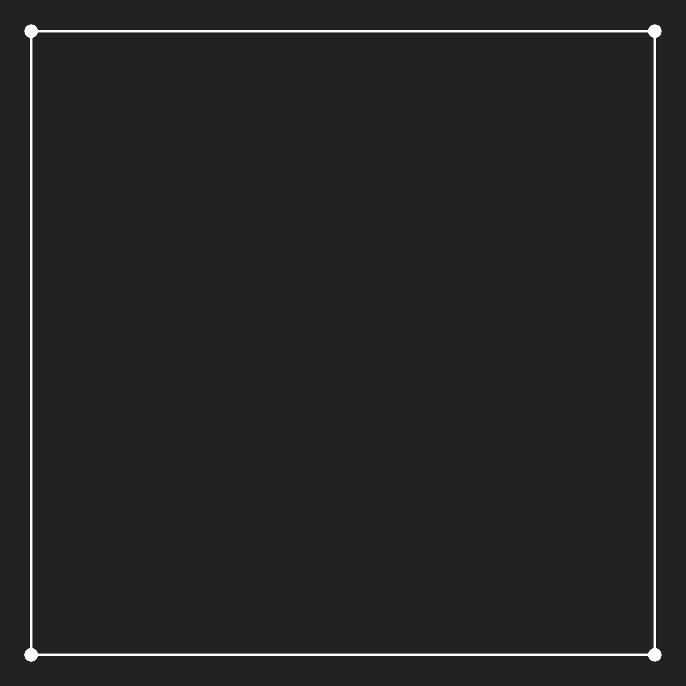
Yes, that is indeed a square.
The next step in our process is to think about ways that we can deform this polygon. A simple method would be to insert a new vertex: we select one of the edges and split it in half by creating a new point in between the two endpoints. If we then add a little noise to perturb the location of the new point, the polygon will be slightly deformed.
How should we select the edge to break in two? One possibility is to select completely at random, but I’m going to try something slightly different and choose edges with probability proportional to their length. A bias to break longer edges will help ensure we don’t end up with polygons with one or two very long edges and many tiny edges. Here’s a function that does this:
sample_edge <- function(polygon) {
sample(nrow(polygon), 1, prob = polygon$seg_len)
}As a side bonus, this algorithm will never select the “edge” that starts with the final point (e.g., the “fifth” point in square never gets selected) because the corresponding edge has length zero. Thanks to this we can safely assume that no matter which row gets selected by sample_edge(), it can’t be the last one. For every possible row ind it can return, there will always be a row ind + 1 in the polygon.
Next step is to realise that if we break an edge into two edges, we’ll need to compute the length of these two new edges: so we might as well have a helper function that takes the co-ordinates of two points as input, and returns the length of an edge connecting them.
edge_length <- function(x1, y1, x2, y2) {
sqrt((x1 - x2)^2 + (y1 - y2)^2)
}Finally, as a convenience, here’s a function that takes a size argument and returns a random number between -size/2 and size/2. It’s just a wrapper around runif() but I find it helps me remember why I’m using the random number generator and it makes my code a little easier for me to read:
edge_noise <- function(size) {
runif(1, min = -size/2, max = size/2)
}Now that I’ve got my helper functions, here’s the code for an insert_edge() function that selects an edge and breaks it into two edges. In addition to expecting a polygon as input (a tibble like square that has columns x, y, and seg_len), it takes a noise argument: a number used to scale the amount of noise added when edge_noise() is called:
insert_edge <- function(polygon, noise) {
# sample and edge and remember its length
ind <- sample_edge(polygon)
len <- polygon$seg_len[ind]
# one endpoint of the old edge
last_x <- polygon$x[ind]
last_y <- polygon$y[ind]
# the other endpoint of the old edge
next_x <- polygon$x[ind + 1]
next_y <- polygon$y[ind + 1]
# location of the new point to be inserted: noise
# is scaled proportional to the length of the old edge
new_x <- (last_x + next_x) / 2 + edge_noise(len * noise)
new_y <- (last_y + next_y) / 2 + edge_noise(len * noise)
# the new row for insertion into the tibble,
# containing coords and length of the 'new' edge
new_row <- tibble(
x = new_x,
y = new_y,
seg_len = edge_length(new_x, new_y, next_x, next_y)
)
# update the length of the 'old' edge
polygon$seg_len[ind] <- edge_length(
last_x, last_y, new_x, new_y
)
# insert a row into the tibble
bind_rows(
polygon[1:ind, ],
new_row,
polygon[-(1:ind), ]
)
}Here’s the function in action:
set.seed(2)
polygon <- square
polygon <- insert_edge(polygon, noise = .5); show_polygon(polygon)
polygon <- insert_edge(polygon, noise = .5); show_polygon(polygon)
polygon <- insert_edge(polygon, noise = .5); show_polygon(polygon)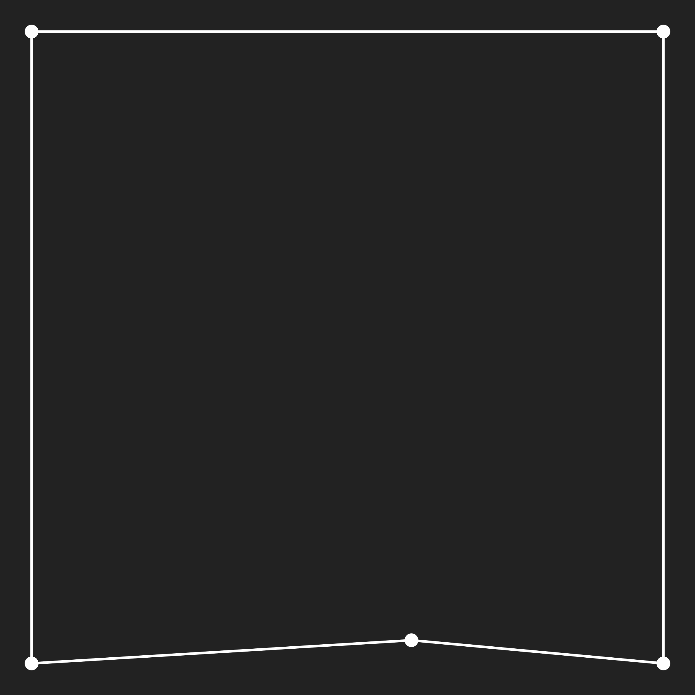
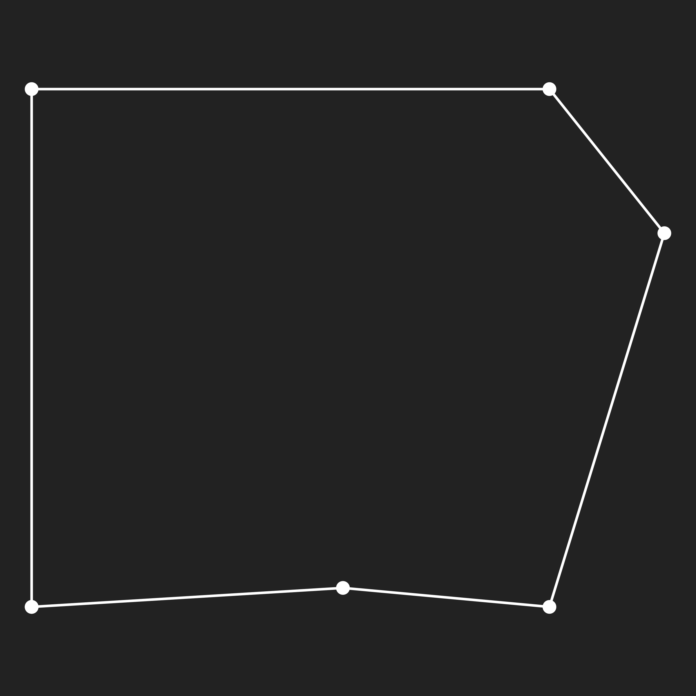
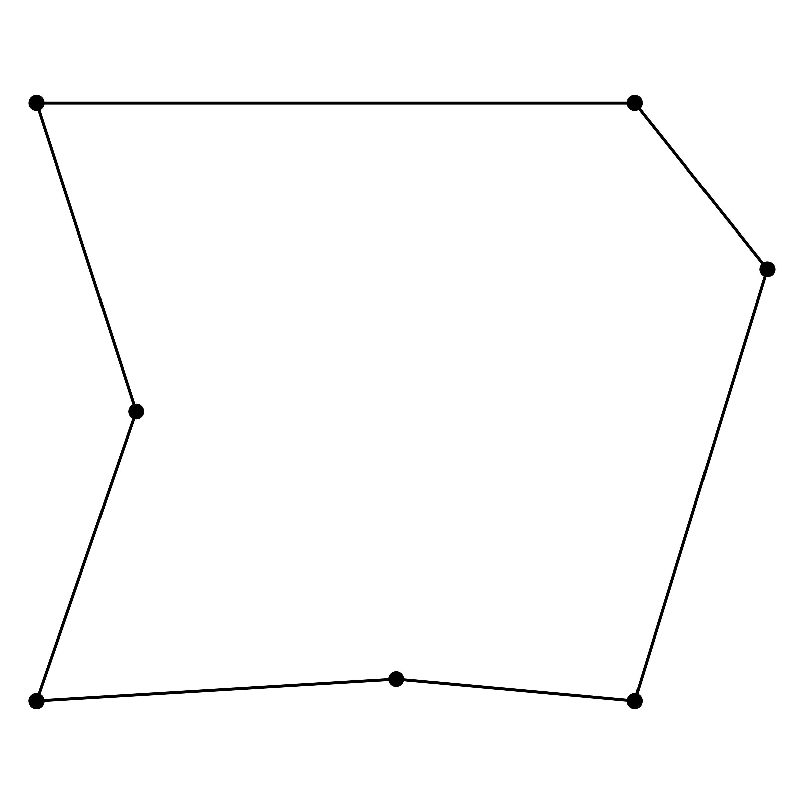
I’ve no intention of manually calling insert_edge() over and over, so the time has come to write a grow_polygon() function that sequentially inserts edges into a polygon for a fixed number of iterations, and at a specific noise level. I’ll also set it up so the user can optionally elect to specify the seed used to generate random numbers. If the user doesn’t specify a seed, the random number generator state is left as-is:
grow_polygon <- function(polygon, iterations, noise, seed = NULL) {
if(!is.null(seed)) set.seed(seed)
for(i in 1:iterations) polygon <- insert_edge(polygon, noise)
return(polygon)
}The images below show what our recursively deformed polygon looks like after 30, 100, and 1000 iterations:
square |>
grow_polygon(iterations = 30, noise = .5, seed = 2) |>
show_polygon(show_vertices = FALSE)
square |>
grow_polygon(iterations = 100, noise = .5, seed = 2) |>
show_polygon(show_vertices = FALSE)
square |>
grow_polygon(iterations = 1000, noise = .5, seed = 2) |>
show_polygon(show_vertices = FALSE)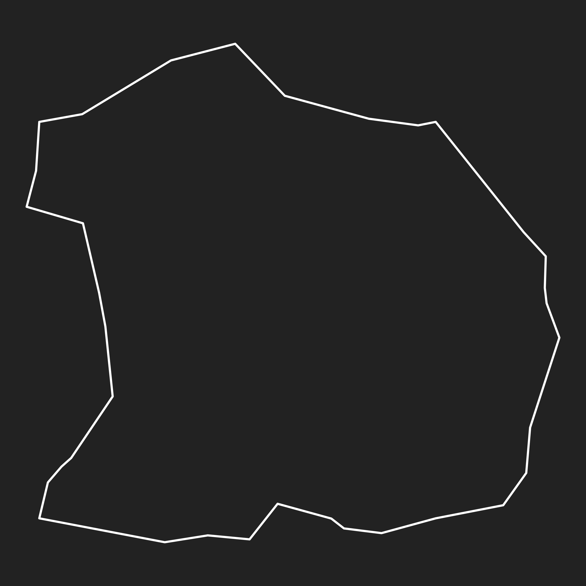
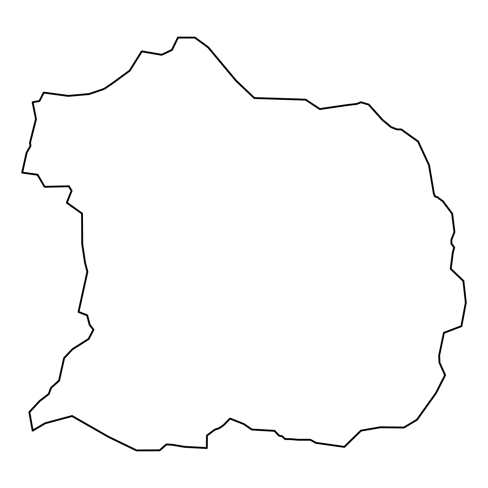
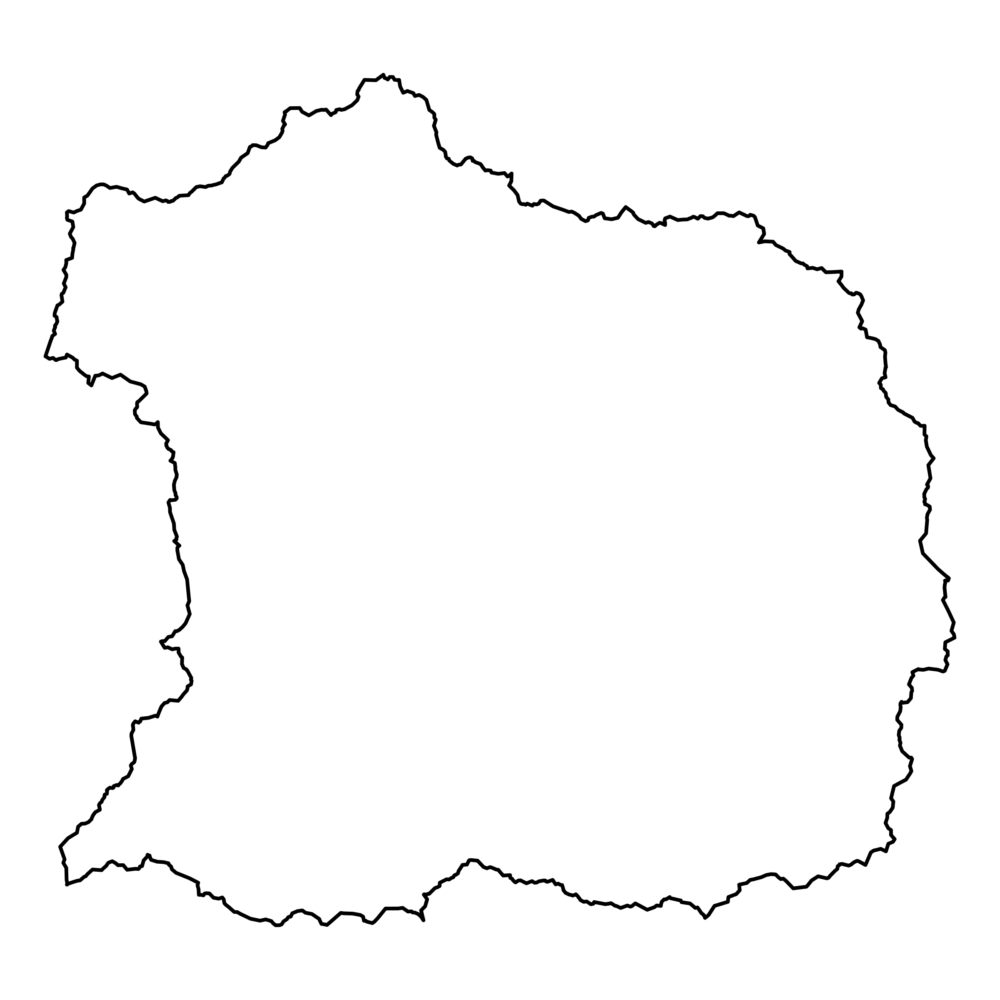
Now that we have functions grow_polygon() and show_polygon() that will create and display a single deformed polygon, let’s generalise them. The grow_multipolygon() function below creates many deformed polygons by calling grow_polygon() repeatedly, and the show_multipolygon() function is a minor variation on show_polygon() that plots many polygons with a low opacity:
grow_multipolygon <- function(base_shape, n, seed = NULL, ...) {
if(!is.null(seed)) set.seed(seed)
polygons <- list()
for(i in 1:n) {
polygons[[i]] <- grow_polygon(base_shape, ...)
}
polygons <- bind_rows(polygons, .id = "id")
polygons
}
show_multipolygon <- function(polygon, fill, alpha = .02, ...) {
ggplot(polygon, aes(x, y, group = id)) +
geom_polygon(colour = NA, alpha = alpha, fill = fill, ...) +
coord_equal() +
theme_void()
}So now here’s what we do. We take the original square and deform it a moderate amount. Running grow_polygon() for about 100 iterations seems to do the trick. This then becomes the base_shape to be passed to grow_multipolygon(), which we then use to create many polygons (say, n = 50) that are all derived from this base shape. Finally, we use show_multipolygon() to plot all 50 polygons. Each individual polygon is plotted with very low opacity, so the overall effect is to create a graded look:
tic()
dat <- square |>
grow_polygon(iterations = 100, noise = .5, seed = 2) |>
grow_multipolygon(n = 50, iterations = 1000, noise = 1, seed = 2)
toc()38.787 sec elapsedshow_multipolygon(dat, fill = "#d43790")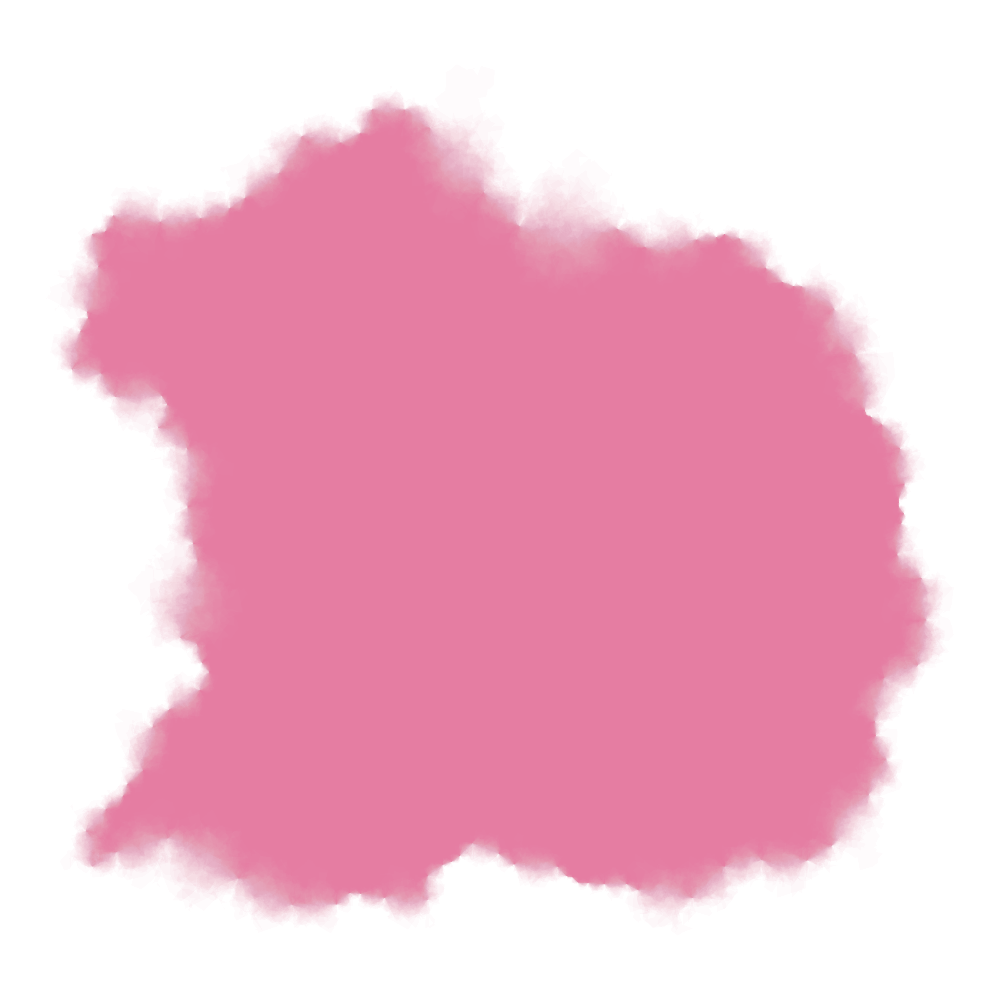
It’s a little slow to produce results, but at least the results are pretty!
Growing polygons faster
As an aside, you may have noticed that the code I’ve written here is inefficient: I’ve got vectors growing in a loop, which is very inefficient in R. There’s a few ways we could speed this up. The most time consuming would be to rewrite the resource intensive loops in C++ and then call it from R using a package like Rcpp or cpp11. I’ll show an example of this technique later in the workshop, but in this case I’ll do something a little simpler.
The big problem with the previous code is that I’ve got atomic vectors (numeric vectors in this case) growing inside the loop, which tends to cause the entire vector to be copied at every iteration. One solution to this is to store each point as its own list, and treat the polygon as a list of points. That way, when I modify the polygon to add a new point, R will alter the container object (the list), but the objects representing the points themselves don’t get copied. Happily, only a few minor modifications of the code are needed to switch to this “list of points” representation:
square_l <- transpose(square)
sample_edge_l <- function(polygon) {
sample(length(polygon), 1, prob = map_dbl(polygon, ~ .x$seg_len))
}
insert_edge_l <- function(polygon, noise) {
ind <- sample_edge_l(polygon)
len <- polygon[[ind]]$seg_len
last_x <- polygon[[ind]]$x
last_y <- polygon[[ind]]$y
next_x <- polygon[[ind + 1]]$x
next_y <- polygon[[ind + 1]]$y
new_x <- (last_x + next_x) / 2 + edge_noise(len * noise)
new_y <- (last_y + next_y) / 2 + edge_noise(len * noise)
new_point <- list(
x = new_x,
y = new_y,
seg_len = edge_length(new_x, new_y, next_x, next_y)
)
polygon[[ind]]$seg_len <- edge_length(
last_x, last_y, new_x, new_y
)
c(
polygon[1:ind],
list(new_point),
polygon[-(1:ind)]
)
}
grow_polygon_l <- function(polygon, iterations, noise, seed = NULL) {
if(!is.null(seed)) set.seed(seed)
for(i in 1:iterations) polygon <- insert_edge_l(polygon, noise)
return(polygon)
}
grow_multipolygon_l <- function(base_shape, n, seed = NULL, ...) {
if(!is.null(seed)) set.seed(seed)
polygons <- list()
for(i in 1:n) {
polygons[[i]] <- grow_polygon_l(base_shape, ...) |>
transpose() |>
as_tibble() |>
mutate(across(everything(), unlist))
}
polygons <- bind_rows(polygons, .id = "id")
polygons
}That’s a fairly large code chunk, but if you compare each part to the earlier versions you can see that these functions have almost the same structure as the original ones. Most of the changes are little changes to the indexing, like using polygon[[ind]]$x to refer to coordinate rather than polygon$x[ind].
The code to generate images using the list-of-points version is almost identical to the original version. All we’re doing differently is using square_l, grow_polygon_l(), and grow_multipolygon_l() where previously we’d used square, grow_polygon(), and grow_multipolygon():
tic()
dat <- square_l |>
grow_polygon_l(iterations = 100, noise = .5, seed = 2) |>
grow_multipolygon_l(n = 50, iterations = 1000, noise = 1, seed = 2)
toc()31.624 sec elapsedThat’s a pretty substantial improvement in performance relative to the original version, with only very minor rewriting of the code. And yes, it does produce the same result:
show_multipolygon(dat, fill = "#d43790")
Using the method: splotches
Okay, so that’s the method. What I generally find when making art is that it’s a little awkward to play around and explore when it takes a long time to render pieces, so it’s handy to have a version of your generative art tools that will quickly produce results, even if those results aren’t quite as nice. It’s a little like having the ability to make rough sketches: something you can do easily before committing to doing something in detail. With that in mind, the splotch() function below wraps a slightly cruder version of the method than the one I showed earlier. It generates fewer polygons, and those polygons have fewer vertices.
splotch <- function(seed, layers = 10) {
set.seed(seed)
square_l <- transpose(tibble(
x = c(0, 1, 1, 0, 0),
y = c(0, 0, 1, 1, 0),
seg_len = c(1, 1, 1, 1, 0)
))
square_l |>
grow_polygon_l(iterations = 10, noise = .5, seed = seed) |>
grow_multipolygon_l(n = layers, iterations = 500, noise = .8, seed = seed)
}The results aren’t quite as nice as the full fledged version, but they are fast:
tic()
splotch_1 <- splotch(seed = 12)
splotch_2 <- splotch(seed = 34)
splotch_3 <- splotch(seed = 56)
splotch_4 <- splotch(seed = 78)
toc()6.09 sec elapsedBecause splotch() is fast and a little crude, it can be a handy way to explore colour choices:
show_multipolygon(splotch_1, "#f51720", alpha = .2)
show_multipolygon(splotch_2, "#f8d210", alpha = .2)
show_multipolygon(splotch_3, "#059dc0", alpha = .2)
show_multipolygon(splotch_4, "#81b622", alpha = .2)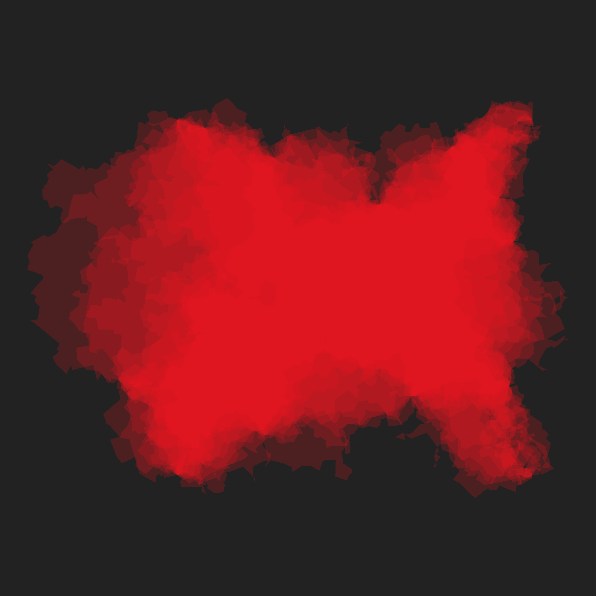
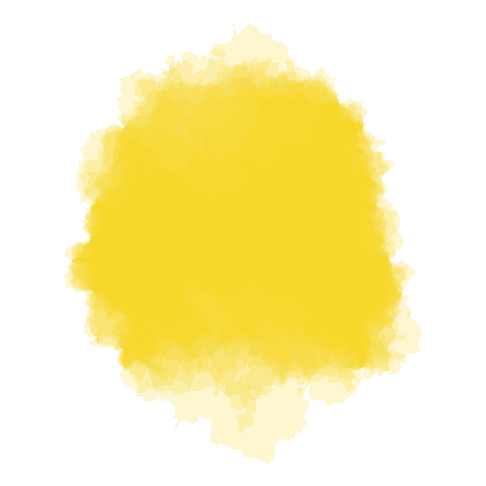
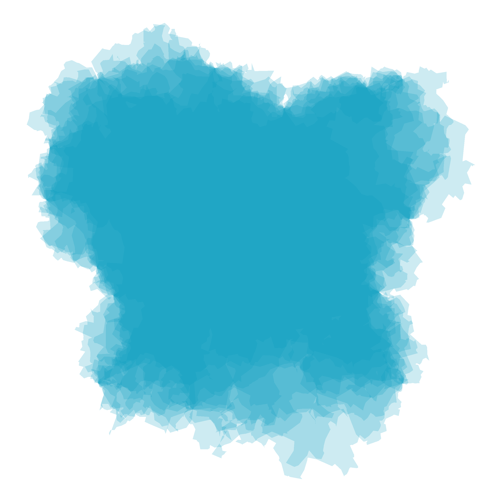
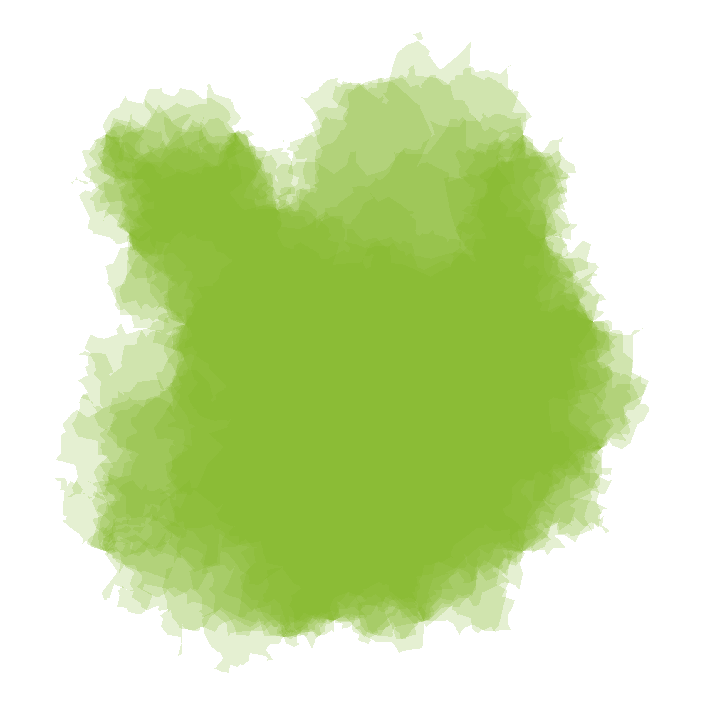
Using the method: Smudged hexagons
The goal of splotch() is to have a tool we can play around with and explore the method. That’s nice and all, but can we also use the method to make something fun? Here’s one example: since we are R users and love our hexagons, let’s write a function that paints hexagons using this recursive deformation method. The goal is to create a shape with a naturalistic look, as if it had been painted or coloured, with some of the edges smudged or blurred. The smudged_hexagon() function attempts to do that:
smudged_hexagon <- function(seed, noise1 = 0, noise2 = 2, noise3 = 0.5) {
set.seed(seed)
# define hexagonal base shape
theta <- (0:6) * pi / 3
hexagon <- tibble(
x = sin(theta),
y = cos(theta),
seg_len = edge_length(x, y, lead(x), lead(y))
)
hexagon$seg_len[7] <- 0
hexagon <- transpose(hexagon)
base <- hexagon |>
grow_polygon_l(
iterations = 60,
noise = noise1
)
# define intermediate-base-shapes in clusters
polygons <- list()
ijk <- 0
for(i in 1:3) {
base_i <- base |>
grow_polygon_l(
iterations = 50,
noise = noise2
)
for(j in 1:3) {
base_j <- base_i |>
grow_polygon_l(
iterations = 50,
noise = noise2
)
# grow 10 polygons per intermediate-base
for(k in 1:10) {
ijk <- ijk + 1
polygons[[ijk]] <- base_j |>
grow_polygon_l(
iterations = 500,
noise = noise3
) |>
transpose() |>
as_tibble() |>
mutate(across(.fn = unlist))
}
}
}
# return as data frame
bind_rows(polygons, .id = "id")
}Here it is in action:
tic()
dat <- smudged_hexagon(seed = 1)
toc()20.272 sec elapseddat |> show_multipolygon(fill = "#d4379005")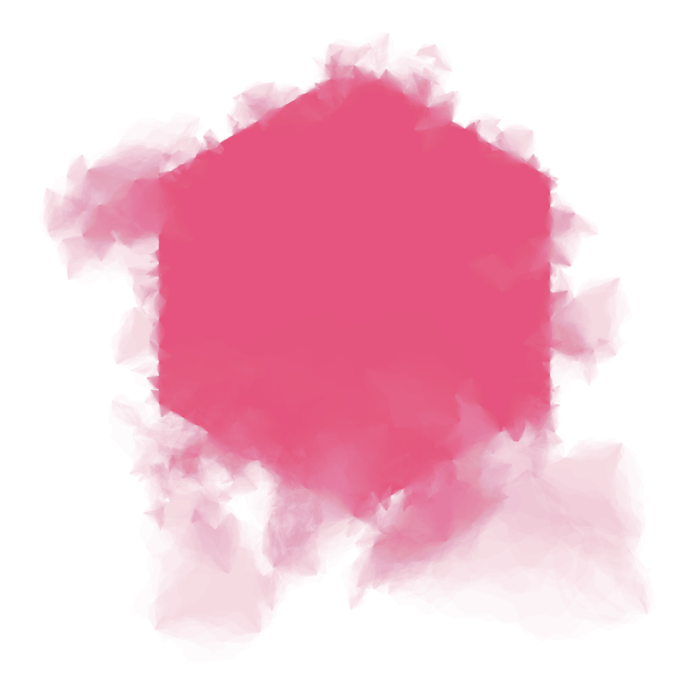
smudged_hexagon(seed = 11) |> show_multipolygon(fill = "#d4379005")
smudged_hexagon(seed = 44) |> show_multipolygon(fill = "#d4379005")
smudged_hexagon(seed = 88) |> show_multipolygon(fill = "#d4379005") 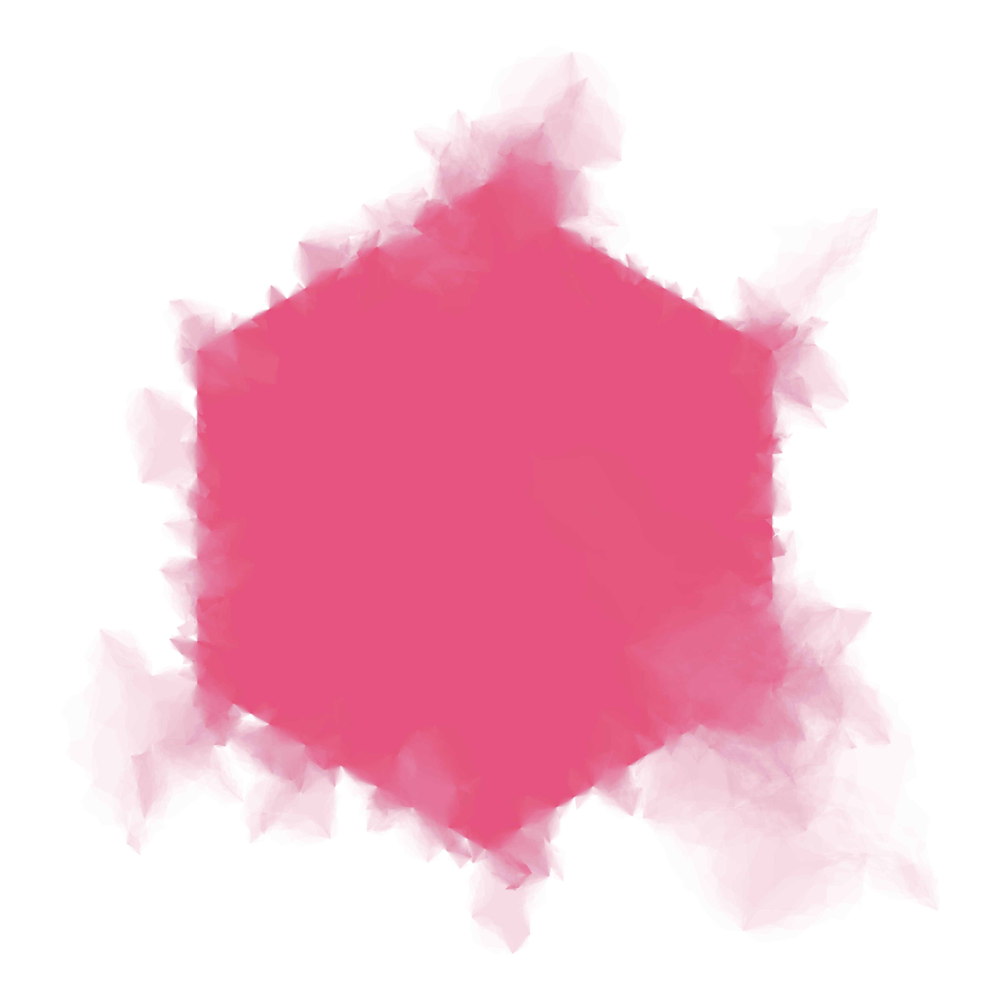
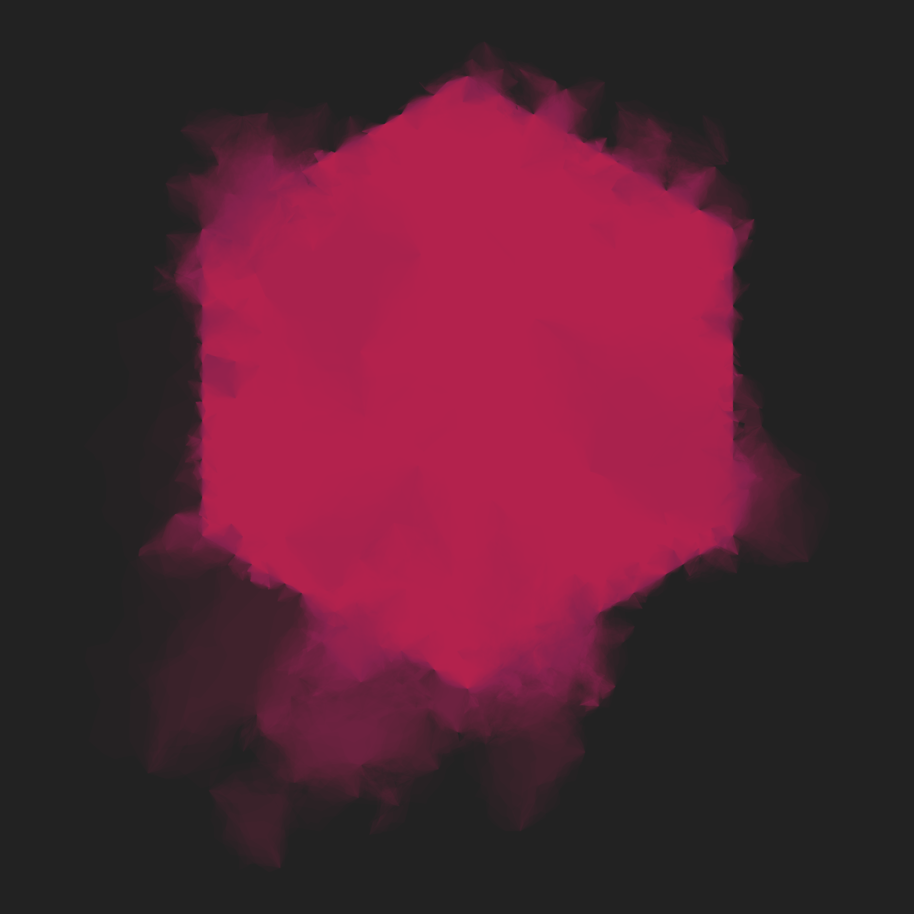
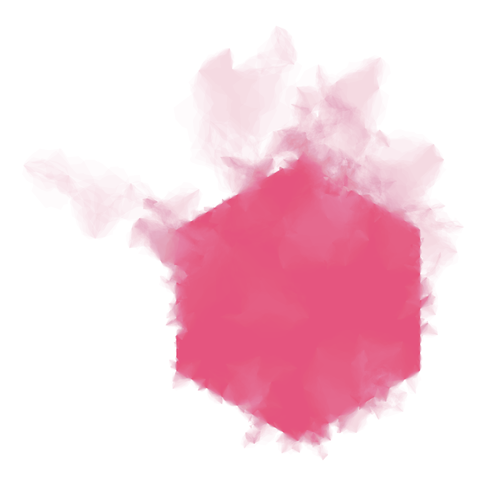
dat <- bind_rows(
smudged_hexagon(seed = 11),
smudged_hexagon(seed = 44),
smudged_hexagon(seed = 88),
.id = "source"
) |>
mutate(
id = paste(id, source),
x = x + as.numeric(source)
) |>
arrange(id)
ggplot(dat, aes(x, y, group = id, fill = factor(source))) +
geom_polygon(alpha = .02, show.legend = FALSE) +
theme_void() +
scale_fill_manual(values = c(
"#ff1b8d", "#ffda00", "#1bb3ff"
)) +
coord_equal() This one makes me happy :-)
Slightly misshapen objects
The second case of polygon trickery that I want to talk about is adapted from an example kindly shared with me by Will Chase. Will posted some code on twitter showing how to very gently deform the outline of a shape to give it a slightly hand drawn look, and I’ll expand on that example here. Let’s suppose I want to draw the outline of a heart. I do a little googling and discover some formulas that I can use for that purpose. If I have a vector describing the angle around circle from 0 to 2\(\pi\), I can compute the x- and y-coordinates for a heart shape using these functions:
heart_x <- function(angle) {
x <- (16 * sin(angle) ^ 3) / 17
return(x - mean(x))
}
heart_y <- function(angle) {
y <- (13 * cos(angle) - 5 * cos(2 * angle) - 2 * cos(3 * angle) -
cos(4 * angle)) / 17
return(y - mean(y))
}Here’s what it looks like when I draw a heart using these formulas:
heart_shape <- tibble(
angle = seq(0, 2 * pi, length.out = 50),
x = heart_x(angle),
y = heart_y(angle)
)
show_polygon(heart_shape)
I use hearts drawn with these formulas quite frequently in my art. They’re easy to compute, the shape often produces interesting patterns when other processes are applied to it, and of course it’s meaningfully associated with positive emotions and affection! However, the problem with using this formula is that the hearts it draws are very precise and mechanical. Sometimes that’s fine: precise, crisp shapes are often exactly the look we’re going for. But other times we might want an outline that looks a little more naturalistic. For instance, I asked my 9 year old daughter to draw a few heart shapes for me that I could use as an example. Here’s what she drew:
knitr::include_graphics("hand-drawn-hearts.jpg")Setting aside the fact that in one case she decided that she actually wanted to draw a frog face rather than a heart – unlike DALL-E, humans have a tendency to flat out refuse to follow the text prompts when you ask them to make art for you – these hearts have a qualitatively different feel to the crisp and clean look of the artificial ones.
What we’d like to do is gently and smoothly deform the outline of the original shape to produce something that captures some of the naturalistic feel that the hand-drawn hearts have. As always we’re not going to try to perfectly reproduce all the features of the original, just capture “the vibe”.
Perlin blobs
Let’s start with a slightly simpler version of the problem: instead of deforming a heart shape we’ll deform a circle using Perlin noise. Our base shape is a circle that looks like this:
circle <- tibble(
angle = seq(0, 2*pi, length.out = 50),
x = cos(angle),
y = sin(angle)
)
show_polygon(circle)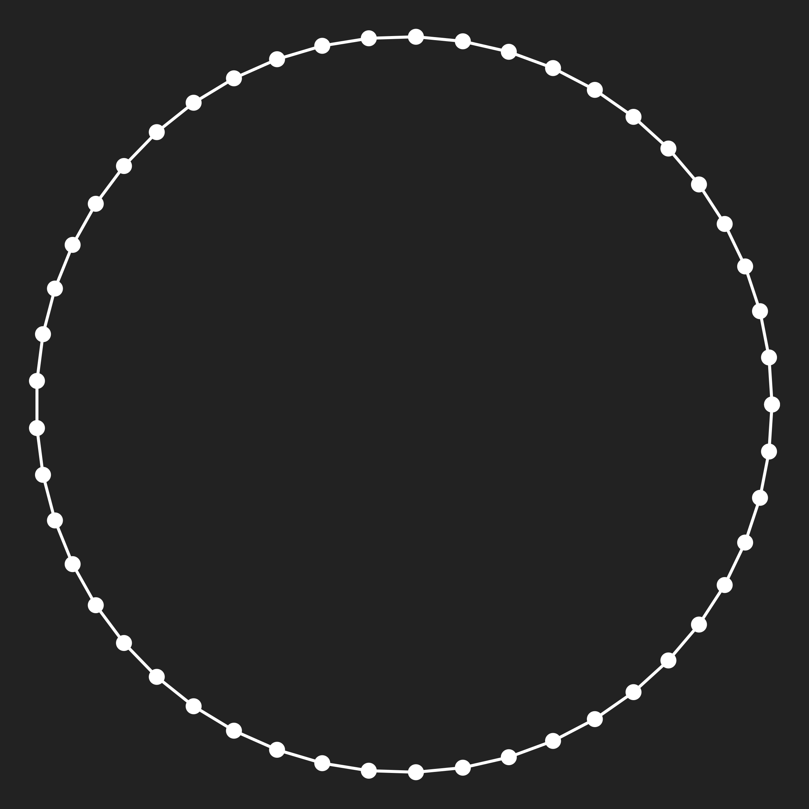
We can create gently distorted circles using the perlin_blob() function shown below. Here’s how it works. First it defines coordinates in the shape of a perfect circle (that’s the variables x_base and y_base). Then we use gen_perlin() to calculate some spatially varying noise at each of those co-ordinates. Or, more precisely, we generate fractal noise at those coordinates using gen_perlin() as the generator and fbm() as the fractal function, but that’s not a super important detail rignt now. What is important is to realise that, although we want to use the numbers returned by our fractal generator to slightly modify the radius of the circle at that location, those numbers can be negative. So we’ll rescale them using the helper function normalise_radius() so that the minimum distance from the origin is r_min and the maximum distance from the origin is r_max. This rescaling helps to ensure that the output is regular.
In any case, after computing the (Perlin-noise distorted) radius associated with each coordinate, we compute the final x and y values for the “Perlin blob” by multiplying the coordinates of the base shape by the radius. Here’s the code:
normalise_radius <- function(x, min, max) {
normalise(x, from = c(-0.5, 0.5), to = c(min, max))
}
perlin_blob <- function(n = 100,
freq_init = 0.3,
octaves = 2,
r_min = 0.5,
r_max = 1) {
tibble(
angle = seq(0, 2*pi, length.out = n),
x_base = cos(angle),
y_base = sin(angle),
radius = fracture(
x = x_base,
y = y_base,
freq_init = freq_init,
noise = gen_perlin,
fractal = fbm,
octaves = octaves
) |>
normalise_radius(r_min, r_max),
x = radius * x_base,
y = radius * y_base
)
}Here are three outputs from our perlin_blob() function:
set.seed(1); perlin_blob() |> show_polygon(FALSE)
set.seed(2); perlin_blob() |> show_polygon(FALSE)
set.seed(3); perlin_blob() |> show_polygon(FALSE)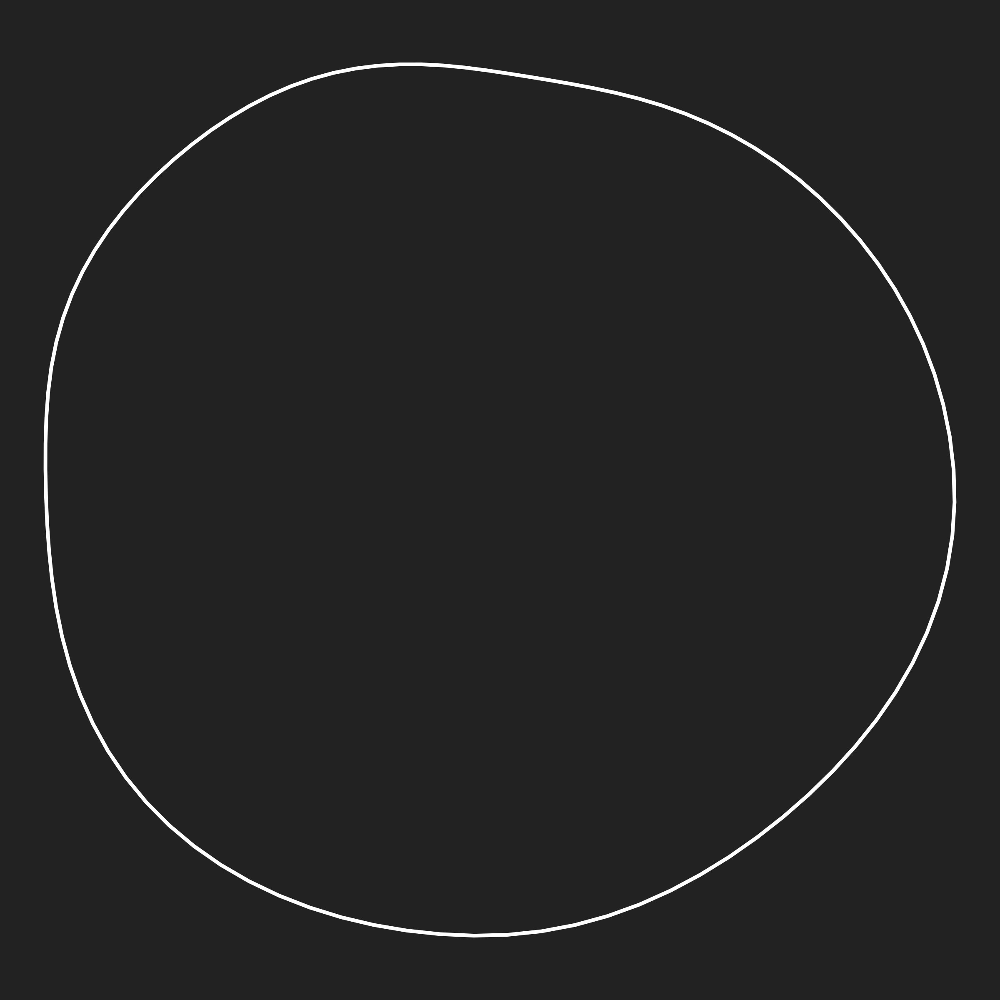
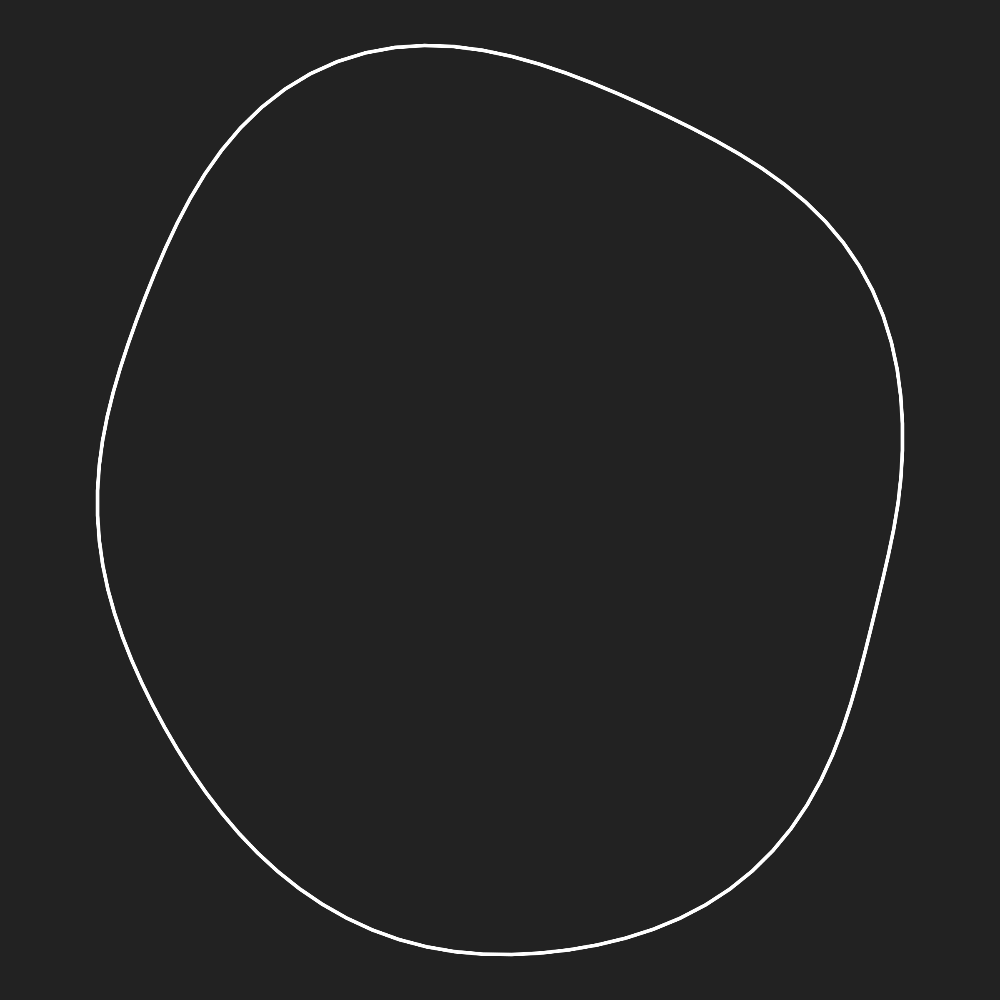
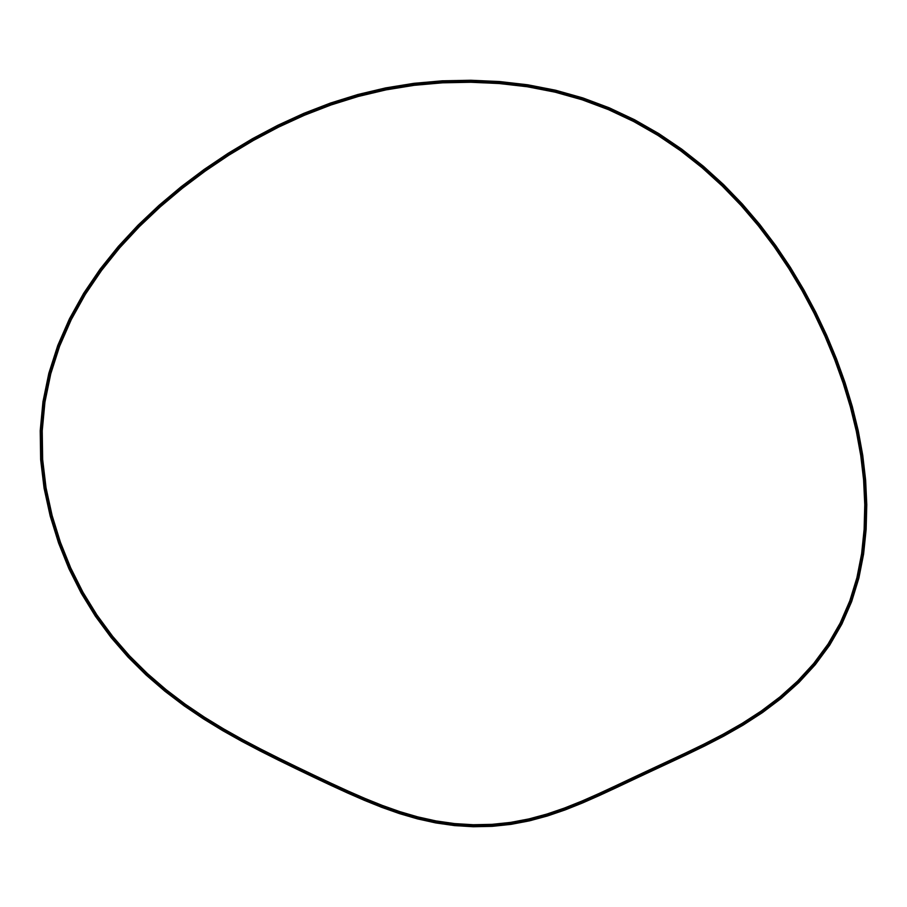
To give you a feel for how this function behaves, here’s a few images showing the effect of changing the freq_init parameter. This argument is used to set the overall noise level when generating fractal noise patterns:
set.seed(1); perlin_blob(freq_init = .2) |> show_polygon(FALSE)
set.seed(1); perlin_blob(freq_init = .4) |> show_polygon(FALSE)
set.seed(1); perlin_blob(freq_init = .8) |> show_polygon(FALSE)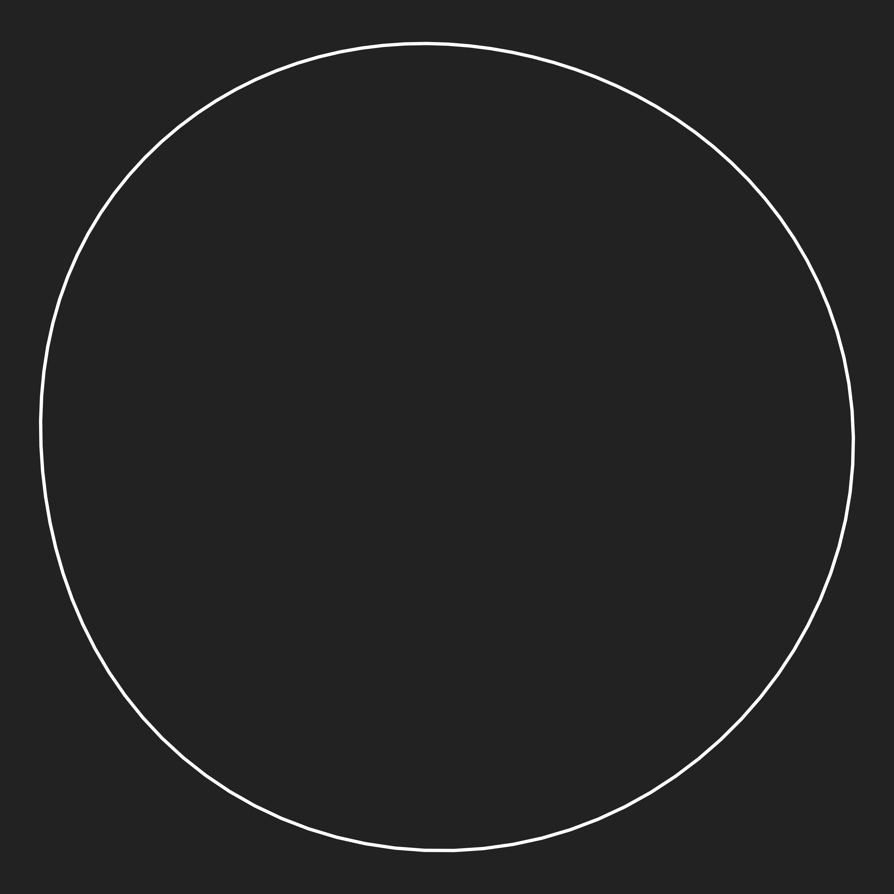
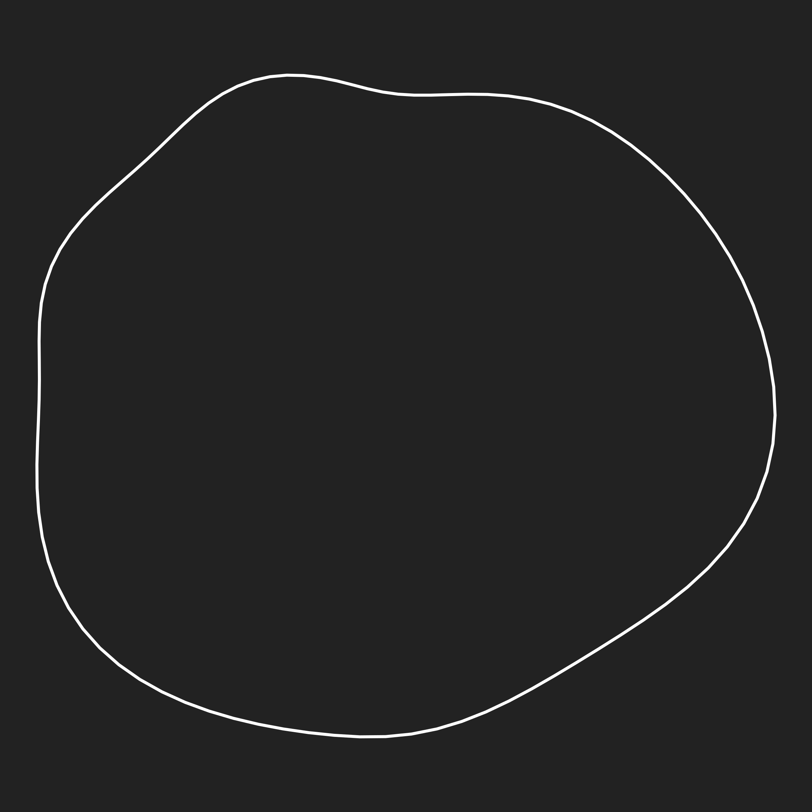
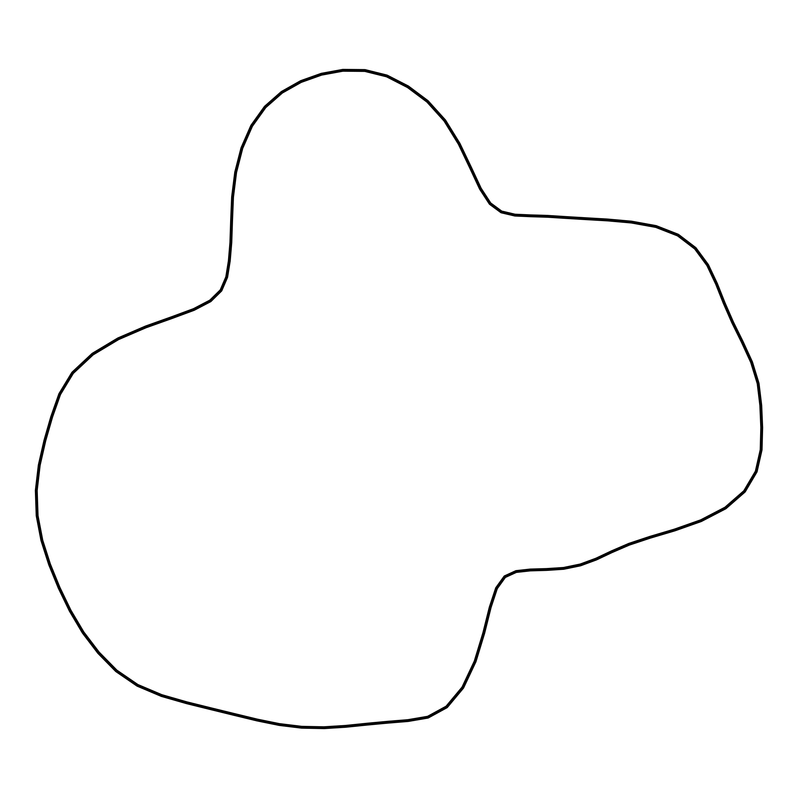
The effect of the radius parameters is slightly different to the effect of the noise parameter. Shifting the r_min and r_max arguments has the effect of “globally flattening” the pattern of variation because the overall shape can only vary within a narrow bound. But it’s quite possible to set a high value for freq_init (causing noticeable distortions to the radius to emerge even at small scales) while constraining the global shape to be almost perfectly circular. The result is a rough-edged but otherwise perfect circle:
set.seed(1);
perlin_blob(
n = 1000,
freq_init = 10,
r_min = .95,
r_max = 1
) |>
show_polygon(FALSE)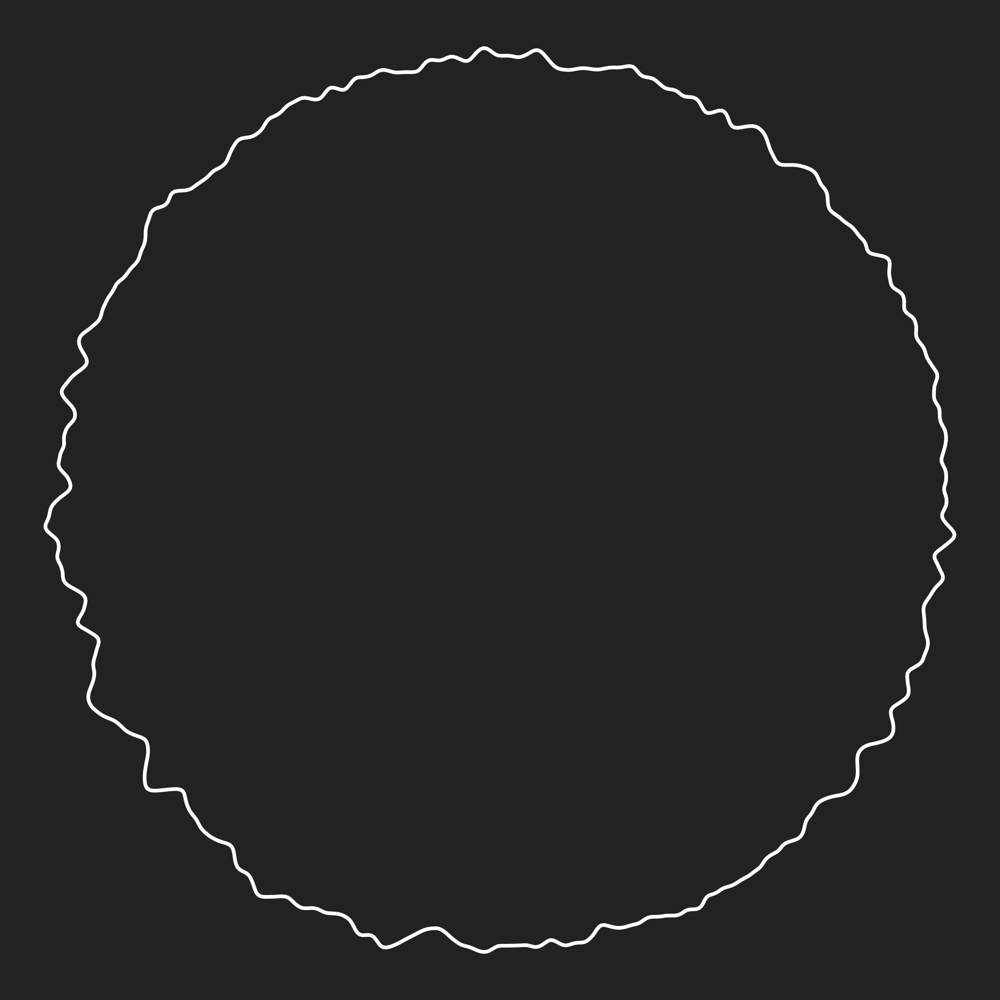
At these parameter settings the output of perlin_blob() reminds me more of a cookie shape than a hand-drawn circle. I’ve never used those settings in art before, but I can imagine some tasty applications!
Perlin hearts
Modifying this system so that it draws distorted heart shapes rather than distorted circles is not too difficult. There’s a few different ways we can do this, but the way I find most pleasing is to start with a distorted circle and then apply the heart_x() and heart_y() transformations:
perlin_heart <- function(n = 100,
freq_init = 0.3,
octaves = 2,
r_min = 0.5,
r_max = 1,
x_shift = 0,
y_shift = 0,
id = NA,
seed = NULL) {
if(!is.null(seed)) set.seed(seed)
tibble(
angle = seq(0, 2*pi, length.out = n),
x_base = cos(angle),
y_base = sin(angle),
radius = fracture(
x = x_base,
y = y_base,
freq_init = freq_init,
noise = gen_perlin,
fractal = fbm,
octaves = octaves
) |>
normalise_radius(r_min, r_max),
x = radius * heart_x(angle) + x_shift,
y = radius * heart_y(angle) + y_shift,
id = id
)
}Here are three outputs from our perlin_heart() function:
perlin_heart(seed = 1) |> show_polygon(FALSE)
perlin_heart(seed = 2) |> show_polygon(FALSE)
perlin_heart(seed = 3) |> show_polygon(FALSE)One of my favourite systems is a very simple one that draws many of these Perlin hearts on a grid, filling each one with a colour selected from a randomly sampled palette. To replicate that here I’ll need a palette generator and once again I’ll fall back on our old favourite sample_canva()
sample_canva <- function(seed = NULL) {
if(!is.null(seed)) set.seed(seed)
sample(ggthemes::canva_palettes, 1)[[1]]
}Now that we have a palette generator we can use the functional programming toolkit from purrr to do the work for us. In this case I’m using pmap_dfr() to call the perlin_heart() at a variety of different settings. I’ve included the x_shift, y_shift and id values among the settings to make it a little easier to plot the data:
perlin_heart_grid <- function(nx = 10, ny = 6, seed = NULL) {
if(!is.null(seed)) set.seed(seed)
heart_settings <- expand_grid(
r_min = .3,
r_max = .4,
x_shift = 1:nx,
y_shift = 1:ny
) |>
mutate(id = row_number())
heart_data <- pmap_dfr(heart_settings, perlin_heart)
heart_data |>
ggplot(aes(x, y, group = id, fill = sample(id))) +
geom_polygon(size = 0, show.legend = FALSE) +
theme_void() +
scale_fill_gradientn(colours = sample_canva(seed)) +
coord_equal(xlim = c(0, nx + 1), ylim = c(0, ny + 1))
}
perlin_heart_grid(seed = 451)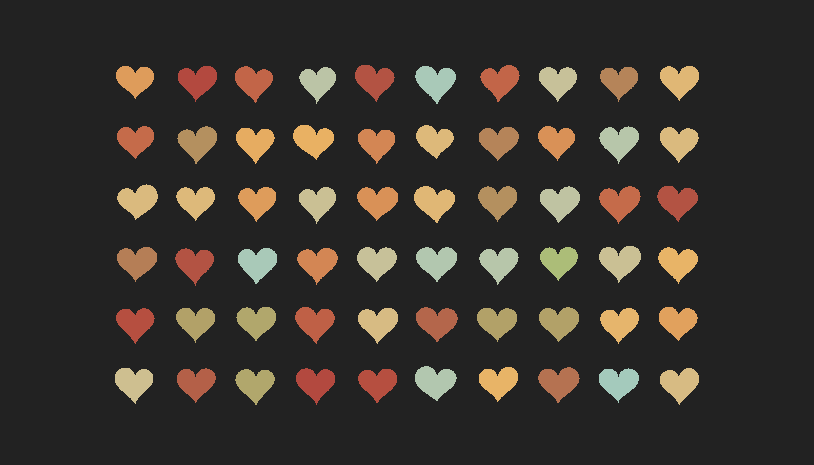
We can elaborate on this idea in various ways. For example, the perlin_heart2() function shown below modifies the original idea by adding a additional width variable computed in a similar way to radius:
perlin_heart2 <- function(n = 100,
freq_init = 0.3,
octaves = 2,
r_min = 0.5,
r_max = 1,
w_min = 0,
w_max = 4,
rot = 0,
x_shift = 0,
y_shift = 0,
id = NA,
seed = NULL) {
if(!is.null(seed)) set.seed(seed)
tibble(
angle = seq(0, 2*pi, length.out = n),
radius = fracture(
x = cos(angle),
y = sin(angle),
freq_init = freq_init,
noise = gen_perlin,
fractal = fbm,
octaves = octaves
) |>
normalise_radius(r_min, r_max),
x = radius * heart_x(angle) + x_shift,
y = radius * heart_y(angle) + y_shift,
width = fracture(
x = cos(angle + rot),
y = sin(angle + rot),
freq_init = freq_init,
noise = gen_perlin,
fractal = fbm,
octaves = octaves
) |>
normalise(to = c(w_min, w_max)),
id = id
)
}Here are three outputs from our perlin_heart2() function, showing the effect of varying the rot parameter. Because the width of outline varies, rot causes the whole pattern of variable thickness to rotate around the heart. As you might imagine, this is going to turn out to be very handy in a moment when we start animating these things!
show_width <- function(polygon) {
ggplot(polygon, aes(x, y, size = width)) +
geom_path(fill = NA, show.legend = FALSE) +
coord_equal() +
scale_size_identity() +
theme_void()
}
perlin_heart2(n = 1000, rot = 0, seed = 2) |> show_width()
perlin_heart2(n = 1000, rot = pi / 2, seed = 2) |> show_width()
perlin_heart2(n = 1000, rot = pi, seed = 2) |> show_width()Here’s an example where I plot several hearts at once courtesy of the magic of pmap_dfr():
perlin_heart_grid2 <- function(nx = 4, ny = 2, seed = NULL) {
if(!is.null(seed)) set.seed(seed)
heart_settings <- expand_grid(
r_min = .3,
r_max = .4,
w_min = .01,
w_max = 6,
x_shift = 1:nx,
y_shift = 1:ny
) |>
mutate(
n = 200,
x_shift = x_shift + runif(n(), -.1, .1),
y_shift = y_shift + runif(n(), -.1, .1),
rot = runif(n(), -.1, .1),
id = row_number()
)
heart_data <- pmap_dfr(heart_settings, perlin_heart2)
heart_data |>
ggplot(aes(x, y, group = id, colour = sample(id), size = width)) +
geom_path(show.legend = FALSE) +
theme_void() +
scale_size_identity() +
scale_colour_gradientn(colours = sample_canva(seed)) +
scale_x_continuous(expand = c(0, 0)) +
scale_y_continuous(expand = c(0, 0)) +
coord_fixed(xlim = c(0, nx + 1), ylim = c(0, ny + 1))
}
perlin_heart_grid2(seed = 666)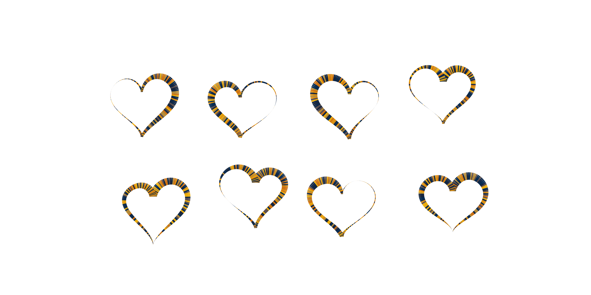
Animated perlin hearts
The final example for this session uses the gifsky package to create an animated version of the variable-width hearts from the last section, by “rotating” or “sliding” the variable-with curves along the contours of the Perlin hearts. The design of the functions in this system is very similar in spirit to that adopted in the static systems. The main difference is that the output is created by calling the save_gif() function. We pass it an expression that, in the normal course of events, would create many plots – that’s what the generate_all_frames() function does – and it captures these plots and turns them into a single animated gif:
perlin_heart_data <- function(nhearts = 10, scatter = .05, seed = NULL) {
if(!is.null(seed)) set.seed(seed)
palette <- sample_canva(seed) |>
(\(x) colorRampPalette(x)(nhearts))()
heart_settings <- tibble(
id = 1:nhearts,
n = 500,
r_min = .35,
r_max = .4,
w_min = -10,
w_max = 10,
x_shift = runif(nhearts, -scatter/2, scatter/2),
y_shift = runif(nhearts, -scatter/2, scatter/2),
rot = runif(nhearts, -pi, pi)
)
heart_settings |>
pmap_dfr(perlin_heart2) |>
group_by(id) |>
mutate(
shade = sample(palette, 1),
width = abs(width)
)
}
generate_one_frame <- function(dat) {
pic <- dat |>
ggplot(aes(x, y, group = id, size = width, colour = shade)) +
geom_path(show.legend = FALSE) +
theme_void() +
scale_x_continuous(expand = c(0, 0)) +
scale_y_continuous(expand = c(0, 0)) +
scale_colour_identity() +
scale_size_identity() +
coord_fixed(xlim = c(-.6, .6), ylim = c(-.6, .6))
print(pic)
}
rotate_vector <- function(x, percent) {
len <- length(x)
ind <- ceiling(len * percent)
if(ind == 0) return(x)
if(ind == len) return(x)
c(x[(ind+1):len], x[1:ind])
}
generate_all_frames <- function(dat, nframes = 100) {
for(frame in 1:nframes) {
dat |>
group_by(id) |>
mutate(width = width |> rotate_vector(frame / nframes)) |>
generate_one_frame()
}
}
animated_perlin_heart <- function(seed, ...) {
save_gif(
expr = perlin_heart_data(seed = seed, ...) |> generate_all_frames(),
gif_file = paste0("animated-perlin-heart-", seed, ".gif"),
height = 1000,
width = 1000,
delay = .1,
progress = TRUE,
bg = "#ffffff"
)
invisible(NULL)
}
tic()
animated_perlin_heart(seed = 100)
toc()12.868 sec elapsedknitr::include_graphics("animated-perlin-heart-100.gif") animated_perlin_heart(seed = 123)
animated_perlin_heart(seed = 456)
animated_perlin_heart(seed = 789)
knitr::include_graphics("animated-perlin-heart-123.gif")
knitr::include_graphics("animated-perlin-heart-456.gif")
knitr::include_graphics("animated-perlin-heart-789.gif")Textured lines
library(e1071)There’s one other topic I want to mention in this post. To motivate the topic, I’ll start by writing a function that uses statistical tools to generate random smooth curves in two dimensions:
smooth_loess <- function(x, span) {
n <- length(x)
dat <- tibble(time = 1:n, walk = x)
mod <- loess(walk ~ time, dat, span = span)
predict(mod, tibble(time = 1:n))
}
smooth_path <- function(n = 1000, smoothing = .4, seed = NULL) {
if(!is.null(seed)) set.seed(seed)
tibble(
x = smooth_loess(rbridge(1, n), span = smoothing),
y = smooth_loess(rbridge(1, n), span = smoothing),
stroke = 1
)
}Here’s an example of the paths it produces:
path <- smooth_path(seed = 123)
path |>
ggplot(aes(x, y)) +
geom_path(size = 2) +
coord_equal() +
theme_void() 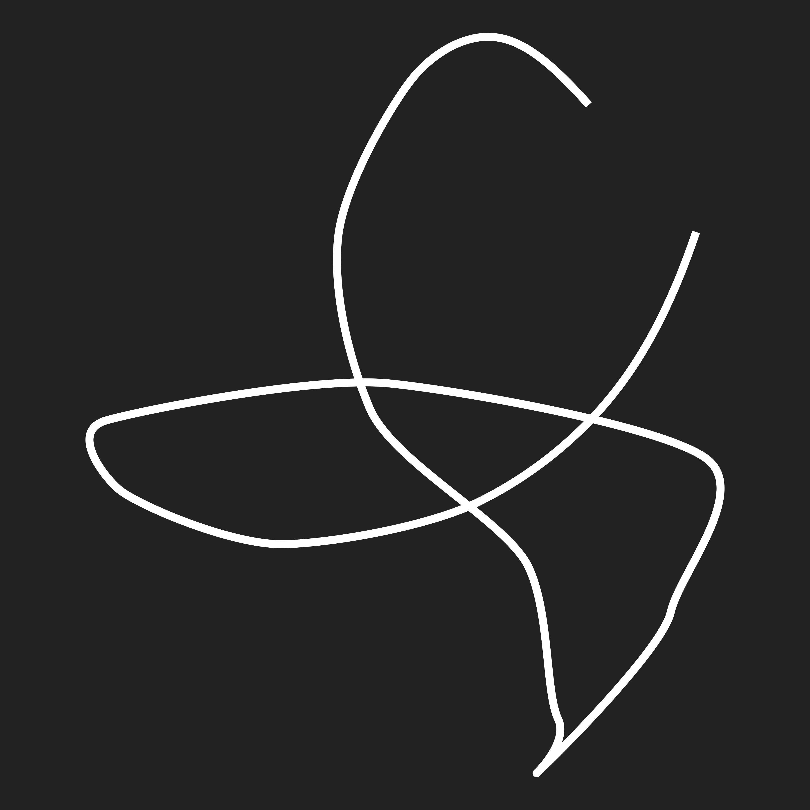
The path it self is smooth but slightly misshapen (i.e., it doesn’t feel “precise” in the same way that the very first heart felt precise), and you can imagine creating a generative art system that uses this kind of technique, but it doesn’t feel hand drawn. The problem here is that while the path feels fairly natural, the stroke itself is too perfect. It’s a solid line with no texture or grading to it. That spoils the illusion of naturalness to an extent.
It’s not too difficult to improve on this if, instead of plotting one smooth curve to represent the path, we plot a very large number of points or small segments with irregular breaks and spacing. In this section I won’t go into a lot of detail on design choices and the various ways you can do this, but I’ll mention that Ben Kovach has a lovely post on making generative art feel natural that discusses this in more detail.
For now, I’ll limit myself to presenting some code for a system that implements this idea:
perturb <- function(path, noise = .01, span = .1) {
path |>
group_by(stroke) |>
mutate(
x = x + rnorm(n(), 0, noise),
y = y + rnorm(n(), 0, noise),
x = smooth_loess(x, span),
y = smooth_loess(y, span),
alpha = runif(n()) > .5,
size = runif(n(), 0, .2)
)
}
brush <- function(path, bristles = 100, seed = 1, ...) {
set.seed(seed)
dat <- list()
for(i in 1:bristles) {
dat[[i]] <- perturb(path, ...)
}
return(bind_rows(dat, .id = "id"))
}
stroke <- function(dat, geom = geom_path, colour = "black", ...) {
dat |>
ggplot(aes(
x = x,
y = y,
alpha = alpha,
size = size,
group = paste0(stroke, id)
)) +
geom(
colour = colour,
show.legend = FALSE,
...
) +
coord_equal() +
scale_alpha_identity() +
scale_size_identity() +
theme_void()
}The plots below show a couple of examples of how you can apply this idea to our original curve:
path |>
brush() |>
stroke()
path |>
brush(bristles = 200, span = .08) |>
mutate(size = size * 3) |>
stroke(geom = geom_point, stroke = 0)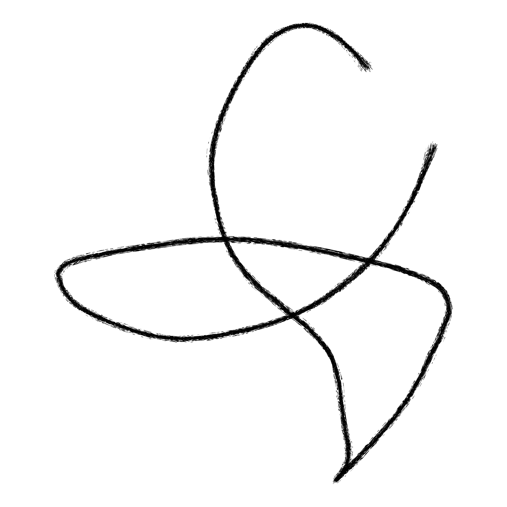
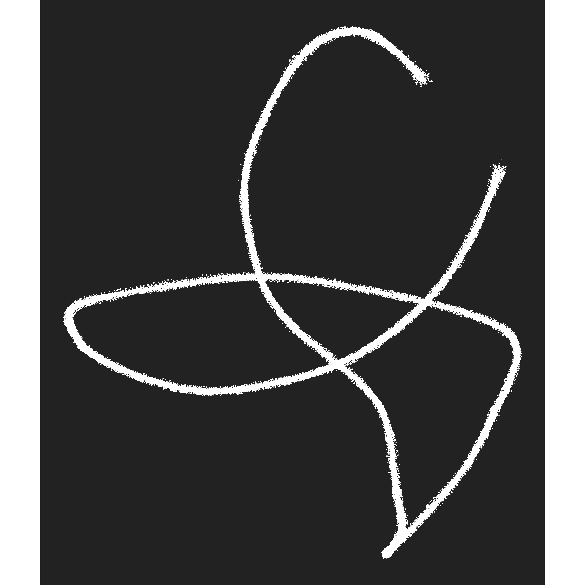
This doesn’t in any sense exhaust the possibilities, but I hope it’s a useful hint about how to get started if you ever find yourself trying to figure out how to draw naturalistic looking pen strokes. Also, the fact that I’ve included the code means I get to apply the idea to the Perlin hearts system:
perlin_heart(n = 500, seed = 123) |>
mutate(stroke = 1) |>
brush(bristles = 100, noise = .02) |>
stroke()Materials
Code for each of the source files referred to in this section of the workshop is included here. Click on the callout box below to see the code for the file you want to look at. Please keep in mind that (unlike the code in the main text) I haven’t modified these scripts since the original workshop, so you might need to play around with them to get them to work!
Reuse
Citation
BibTeX citation:
@online{navarro2024,
author = {Navarro, Danielle},
title = {Art from Code {III:} {Polygon} Tricks},
date = {2024-12-20},
url = {https://blog.djnavarro.net/posts/2024-12-20_art-from-code-3/},
langid = {en}
}
For attribution, please cite this work as: